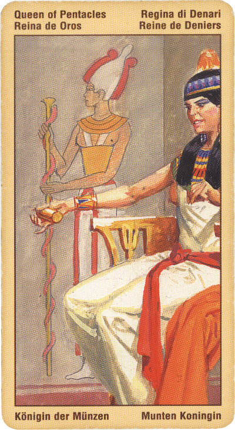

Королева Пентаклей
Иначе Дама или Владычица Пентаклей.
Значение: Королева Денариев олицетворяет внешнее и внутреннее богатство. Это – человек, пожинающий плоды своих трудов: художник, добившийся признания, ученый, сделавший важное открытие. Если карта соответствует женщине, то она к тому же прекрасная мать и хозяйка.
В раскладе обычно означает события: прямая – веселые, благоприятные (свадьба, юбилей, новоселье),
Практичная, способная, полагающаяся на собственные суждения. Трудолюбие, любовь к комфорту и материальное благополучие. Несмотря на присущую расчетливость, она щедра. Внимание к финансовым вопросам и вопросам, связанным со здоровьем. Упорный труд будет щедро вознагражден.
С этой картой связаны такие понятия, как надежность, свободное поведение, свободное выражение своих мыслей величавость, достоинство, благодеяния. В принципе, королева пентаклей может означать человека богатого, но не растерявшего своего милосердия и поэтому склонного к филантропии.
Карта может символизировать также все то, что связано с возделыванием почвы, садоводством. Умение выражать себя в форме.
Королева Пентаклей - образ женщины, которая добивается прежде всего общественного признания и уже затем - семейного благополучия.
Если данная карта выпала в вашем раскладе, вы - на редкость незаурядная личность, способная достичь самых больших высот в избранной деятельности. Но, как правило, Королева Пентаклей, при всех своих многочисленных талантах, обладает еще таким редким качеством, как скромность.
Вы можете достичь очень многого, и сами прекрасно это осознаете. Однако присущее вам чувство внутренней гармонии и стремление к «золотой середине» всегда дают вам понять, что погружение в ту или иную сферу деятельности начинает вносить перекос в ваши тщательно разработанные планы на жизнь.
В этом случае вы просто «переводите» свои организаторские способности в другую область, чтобы и там совершенствовать свои таланты. Вы редко просите совета у других людей, но сами охотно делитесь опытом и знаниями с окружающими.
Карта умной, уважаемой женщины с достатком, щедрой. Умеет распоряжаться средствами, терпелива. На работе обычно занимает начальствующие должности. Умеет убеждать, добиваться своего. Покровительница. От мужчин ждет полного соответствия себе. Благоустройство дома, благоразумие, богатство, привилегии.
Перевернутая – может указывать на всепоглощающий материализм, при котором домашнее хозяйство приобретает черты фанатизма и в конечном итоге отрицает все остальные жизненные аспекты. Не исключена и обратная ситуация, при которой человек пренебрежительно относится к своим финансам, здоровью и дому.
Перевернутая королева пентаклей может означать личность подозрительную, довольно безответственную, коварную, склонную к интригам. Доверять ей опасно - может подвести.
Иногда королева пентаклей (перевернутая) символизирует человека закомплексованного, тип истерички, панически боящегося неудач и оттого напрочь лишенного непосредственности в своих действиях.
В отрицательном значении: хитрая подозрительная особа. Стремиться командовать во всем. Интриганка, сплетница, мошенница. Неудачи, страх, болезнь, беды. Склоки в женском коллективе.